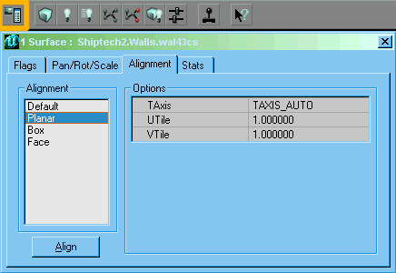

Surface Alignment

Alignment tab |
This tab of the Surface Properties Window aligns the texture on one or several surfaces.
- select an alignment type in the left hand box
- set parameters required
- click "Align"
Note that the UTile and VTile properties work the opposite way to the scaling properties of the Pan tab. Here, a value of 4, for example, means shrink by a factor of 4, or tile 4 repetitions, not scale up by 4.
Default
Planar
Seems to be good for cylinder sides
Box
Face
UT stuff below
Setting Alignment
There are several ways to align a texture.
Quick Properties window recap: Select the texture by clicking on it in the 3D UnrealEd Viewport. Hold down control while clicking to select multiple textures. Right-click on one of the textures you have selected to bring up the texture pop-up menu. Click on the alignment tab (you may have to click more than once or several combinations of clicks to bring up the tab, UnrealEd is rather messed up here).
Automatic
Automatic alignment commands in the Surface Properties Window align the texture based on where it is in the world grid
- Align as Floor/Ceiling
- lines the texture up to an invisible floor grid.
- Wall Direction
- Wall Pan
- Unalign
Obviously, Align as Floor/Ceiling applies to generally horizontal surfaces and the other two apply to generally vertical surfaces. Selecting an alignment that has no bearing on the direction of surface you have selected (like Align as Floor/Ceiling applied to a straight up and down wall), will have no affect on the texture.
Numeric
Aligning to whatever specifications you want using the detailed alignment window
- You can move the texture vertically and horizontally using the 1, 2, 4, 8, 16 buttons in the top-left.
- In the bottom left, there are buttons that correspond to the menu options I mentioned earlier.
- At the top-right, there are a few buttons to rotate or flip the texture, just press them and see what they do, they're all pretty straight-forward.
Click the buttons to pan the texture in the U or V (horizontal & vertical) directions. If the surface has a flip or rotation applied, it moves into the applied direction. (arg... I'm too good at maths to explain this in n00b-friendly terms — tarquin)
Rotation
Allows texture to be rotation 45 or 90 degrees. Hold SHIFT while pressing the button with reverse the rotation. T horizontal or vertical surface can be flipped opposites if Flip U or Flip V is pressed.
Scaling
You can:
- Select a number from the "Simple" box's drop-down and hit Apply. This applies the scaling to the U and V axes.
- Type a number in the "Simple" box and hit Apply. This applies the scaling to the U and V axes.
- Type two numbers in the "U" and "V" boxes and hit the Apply button next to those
In all cases, checking "relative" will apply the scaling relative to the current scaling of the texture.
The Scaling fields don't display information about the selected texture, they merely allow you to set it. To read the current texture scaling values, type "POLY TEXINFO" into the UnrealEd Console and open the log window to see the information.
You can change the scaling of the texture a couple self-explanatory ways in the bottom-right.
Manual
There are also buttons in the toolbox for pan and rotate; though they still work in single units they are sometimes much faster. See:
Tools
There's also TexAlign, an external utility for aligning textures on complex shapes like cylinders.
Reading Alignment
Use the POLY TEXINFO command in the UnrealEd Console and read the result in the Log window.
cylinders
Thought it could be handy ; you can use tan(pi/n) (n number of side) as a factor for scaling,
for example with a 8 sides cylinder you could use U=tan(pi/8)*2=0.8284271247469898 and the textures will fit seamlessely
See also Surface Context Menu